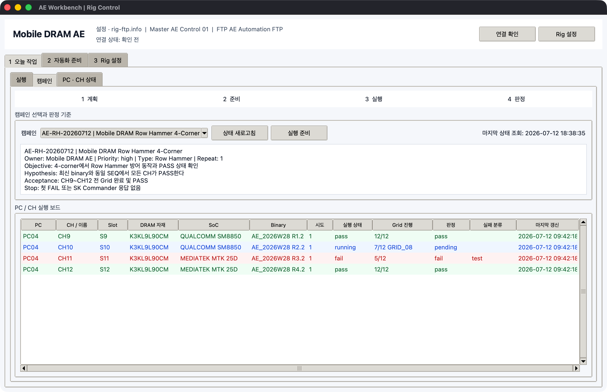

AE 캠페인 운영
AE 캠페인은 여러 PC와 CH에 흩어진 실행을 하나의 시험 목적과 판정 기준으로 보는
Master 화면입니다. .rigseq.zip에 캠페인이 포함된 경우에만 목록에 나타납니다.

준비 흐름
Seq Generator Campaign
-> AE preflight READY
-> checksummed .rigseq.zip
-> Rig Master upload
-> PC x CH x attempt 실행표
-> Slave hash/attempt validation
-> SK Commander launcher
-> monitor verdict + Grid progress
-> result triage
캠페인 확인
2 자동화 준비에서 검증된.rigseq.zip을서버 라이브러리 등록으로 올립니다.1 오늘 작업 > 캠페인으로 이동합니다.- Campaign ID, 제목, owner, priority, test type, repeat를 확인합니다.
- Objective, Hypothesis, Acceptance, Stop 조건을 확인합니다.
Rig는 다음이 맞지 않으면 업로드 또는 Slave 실행을 거부합니다.
- campaign bundle, snapshot, preflight schema
- snapshot과 preflight의 Campaign ID
preflight.ok=true- canonical campaign snapshot SHA-256
- 실행 행의 attempt가
1..repeat_count범위인지
기존 campaign 없는 Rig SEQ는 계속 사용할 수 있지만 캠페인 보드와 readiness 보장은 없습니다.
실행표 만들기
- 캠페인 화면에서
실행 준비를 누릅니다. - 해당
[SEQ]패키지를 선택합니다. - SK Commander launcher
[FLOW]를 선택합니다. Rig 대상 불러오기를 누릅니다.- 생성된 모든 행의 PC, CH/이름, Slot, 자재, Binary, attempt를 확인합니다.
실행 시작을 누릅니다.
repeat가 2이고 한 PC에 CH9~CH12 네 개가 있으면 8행이 생성됩니다. 같은 Windows PC의 UI 자동화는 포커스 충돌을 막기 위해 Slave가 순서대로 실행합니다.
Campaign ID와 제목은 package snapshot 값이 우선합니다. 실행표에서 이 값을 임의로
바꾸더라도 Master와 Slave가 package 값을 다시 적용합니다. campaign_attempt만 계획된
범위 안에서 행별로 바꿀 수 있습니다.
캠페인 보드 읽기
| 열 | 의미 |
|---|---|
| PC, CH/이름, Slot | 실행 대상 |
| DRAM 자재, SoC, Binary | 현재 target provenance |
| 시도 | 현재 또는 계획된 repeat 번호 |
| 실행 상태 | planned, running, pass, fail, offline |
| Grid 진행 | 완료/전체와 현재 Grid |
| 판정 | pending, pass, fail |
| 실패 분류 | 자동 또는 monitor 기반 분류 |
상태 새로고침은 기존 heartbeat 파일을 읽습니다. 실시간 socket 연결이나 영상
streaming이 아니며, 새 screenshot도 요청하지 않습니다.
물리 CH inventory와 반복 실행 이력은 분리됩니다. Slave heartbeat는 최근 campaign run을
PC당 최대 256개만 유지해 attempt 2가 시작되어도 attempt 1 판정이 보드에서 사라지지
않게 하면서 상태 파일이 무한히 커지는 것을 막습니다. 영구 원본은 results와 triage입니다.
Monitor에서 최종 판정 만들기
Picker에서 SK Commander 상태 component를 다음처럼 구성합니다.
- 파랑/running: 실행 중, acceptance는 pending
- 초록/PASS: acceptance pass
- 빨강/FAIL: acceptance fail, failure class test
- Grid text: block 이름이나 상태에
GRID또는PROGRESS표시
여러 조건은 Picker의 AND/OR group으로 묶습니다. 예를 들어 창 안의 CH11 marker와 PASS text 또는 초록 상태를 함께 확인할 수 있습니다.
실패 분류와 조치
PC · CH 상태에서 대상 PC를 선택하고새로고침을 누릅니다.- 실패 행을 선택합니다.
더보기 > 선택 결과 분류를 누릅니다.- 분류, 조치, 담당자, 판정 근거와 다음 작업을 입력합니다.
분류:
test | setup | automation | infrastructure | material | product
stopped | timeout | unknown
조치:
open | retest | blocked | accepted | closed
이 기록은 triage/<node>/<job_id>.json에 저장됩니다. results 원본과 로그를 수정하지
않으며, 사용자가 저장할 때 한 번만 FTP에 씁니다.
현장 검증 경계
Rig가 검증하는 것은 package 구조, hash, 계획값, launcher 형식, 실행/monitor 결과입니다. 실제 SK Commander prompt와 Grid component, Qualcomm/MTK downloader, 물리 switch, 온도/VDD 계측 정확도는 현장 성공 자료와 대조해야 합니다.